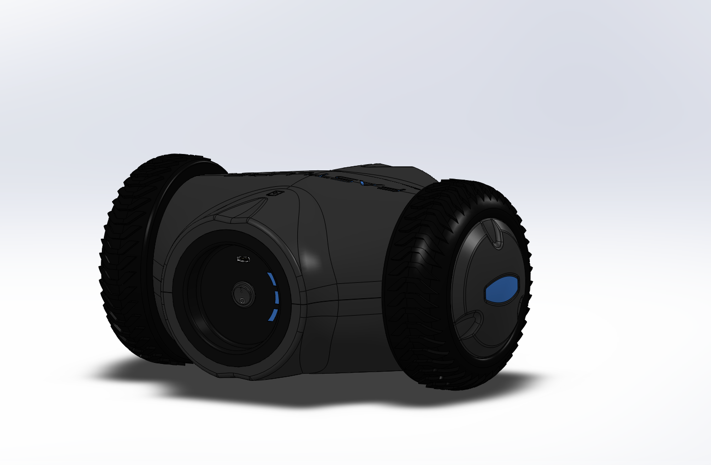
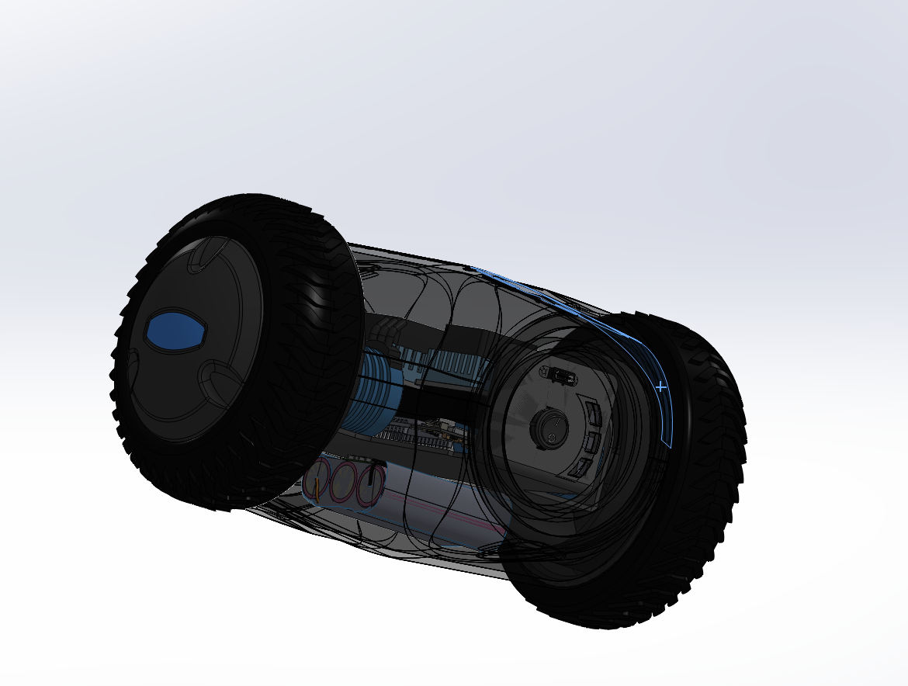
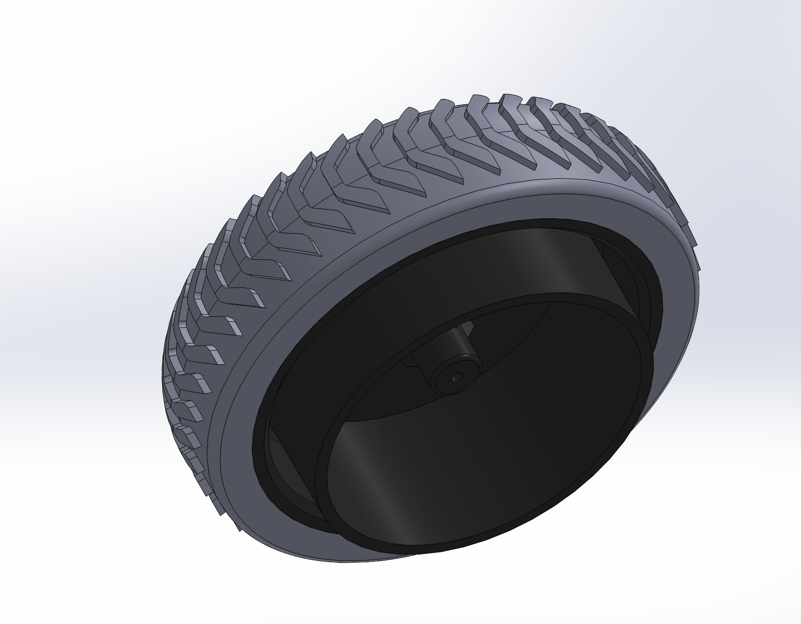
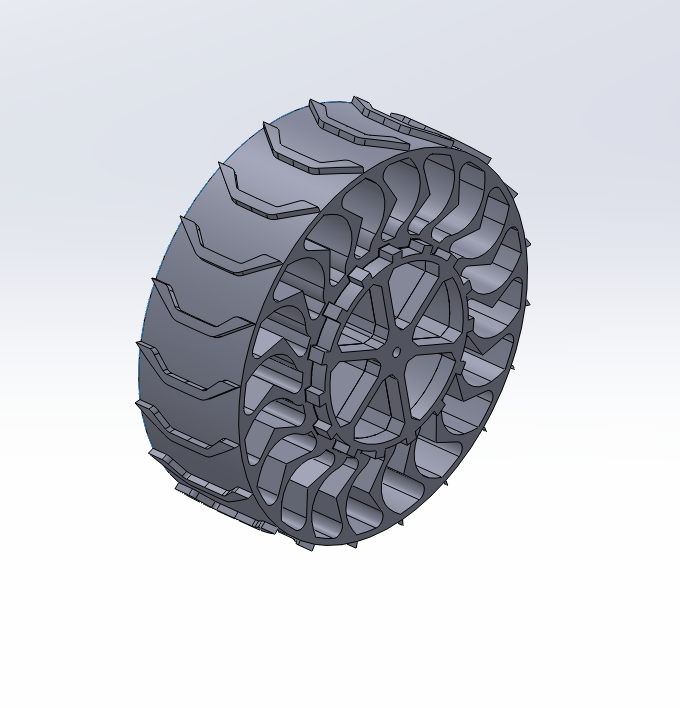

20 mph target
The chassis and selected components had to support a target speed of 20 mph.
Project 04 · Early-stage concept
A rugged, high-speed toy concept designed to give larger dogs something dynamic to chase, with a replaceable attachment to catch.

The concept was developed for larger dogs that need a fast and durable target to chase outdoors. The vehicle had to combine speed, impact resistance, and off-road capability in a body that could tolerate repeated contact with teeth and the ground.
The chassis and selected components had to support a target speed of 20 mph.
The body needed to withstand wear, impacts, and biting from large dogs.
The vehicle was intended to travel across grass, asphalt, gravel, and other uneven surfaces.
I modeled the chassis and helped iterate through multiple layouts as the team explored how to package the drive system, protect the internal components, and keep the vehicle stable at speed. The internal battery, electronic speed controllers, and motors shown in the model are placeholders used to establish the initial packaging volume. Early work began with real components, but the project remained in the concept-development stage.



The two-wheel layout shown in the current model cannot balance on its own, so the rear support became a key design question. One concept added a small caster wheel beneath the back of the chassis. Another used a smooth plastic dome that could slide over the ground without introducing a more vulnerable rotating component.
I also modeled an airless wheel concept to explore whether a compliant tire structure could improve stability and traction across different surfaces. These options still require prototyping and testing to compare control, durability, and terrain performance.
The rear of the vehicle was designed as an interchangeable attachment area for different chew toys. This gives the dog a clear target to catch and bite while allowing worn attachments to be replaced or swapped for different styles of play. Because a dog will not always bite only the intended attachment, the surrounding chassis would still need a rugged enclosure with protected electronics and no easily damaged external features.